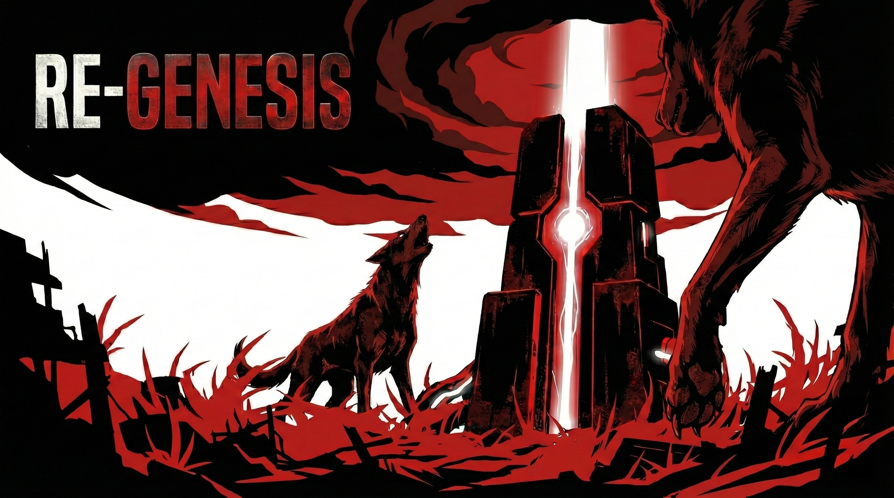

Re-genesis
| Re-genesis | |
|---|---|
|
 "죽어가는 세상의 유전자를 지배할 것인가, 아니면 세상과 함께 숨 쉴 것인가." |
|
| 개발 | Kiwi Project Team |
| 장르 | 3D 탑뷰 생존 제작 + 핵심 공장 자동화 |
| 엔진 | Unity6 |
| 그래픽 API | DirectX 12 |
| 출시 상태 | 개발 중 (Pre-Alpha) |
1. 개요
내용 보기/접기
RE-GENESIS는 3D 쿼터뷰 시점의 생존 제작 및 공정 자동화 시뮬레이션 게임입니다.
붉은 방사능과 기괴한 변이체로 가득 찬 행성에서, 플레이어는 구시대의 기술적 파편과 생명체의 정수를 결합하여 행성을 정화해야 합니다.
냉소적인 조력자 AI '로그(LOG-0)' 와의 교감을 통해, 황폐해진 세계를 다시 설계하는 '재창조'의 과정을 경험할 수 있습니다. 혹은, 그대로 방치할수도 있습니다.
2. 특징
내용 보기/접기
2.1. 세계관
멸망 이후의 행성은 방사능으로 뒤덮여 모든 생명이 변이되거나 죽어버렸습니다. 유일한 생존자인 플레이어는 과거 문명의 산물인 관리 AI 로그(LOG-0) 를 깨우게 됩니다.
로그는 플레이어를 '생물학적 자산'이라 부르며 냉소적으로 대하지만, 행성 정화 프로토콜을 가동하기 위해 유일한 조력자로서 함께하게 됩니다.
2.2. 전투 시스템
-
생체 융합 생산: 단순히 광물을 캐는 것이 아니라, 사냥을 통해 얻은 유전자 샘플과 필드의 고철을 가공기(BioProcessor)와 합성기(BioSynthesizer)에서 결합하여 고차원의 부품을 연성합니다.
-
정밀 물류 자동화: 컨베이어 벨트와 분배기를 활용하여 복잡한 생산 라인을 구축할 수 있습니다. 특히 곡선 구간에서의 물리적 정체를 수학적 경로 보간 알고리즘으로 해결하여 매끄러운 아이템 이송을 보장합니다.
-
레시피 해금: 기초 단계(T1000)부터 최종 정화 단계(T1300)까지 체계적인 기술 티어가 존재합니다. 퀘스트를 통해 새로운 레시피를 해금하며 공장의 규모를 확장해 나갑니다.
-
전략적 사냥: 전투용 석궁을 제작하여 물고기나 개 형태의 변이체를 사냥하고, 이들에게서 핵심 재료인 유전자 샘플 A와 B를 확보해야 합니다.
3. 기술 사양
내용 보기/접기
| 분류 | 상세 내용 |
|---|---|
| 운영체제 | Windows 10/11 (64bit) |
| 프로세서 | Intel Core i5 / AMD Ryzen 5 이상 |
| 메모리 | 8 GB RAM 이상 (16 GB 권장) |
| 그래픽 | NVIDIA GTX 1060 / AMD RX 580 이상 |
| 저장 공간 | 2 GB 이상의 여유 공간 |
4. 게임 정보
내용 보기/접기
4.1. 캐릭터 스탯
| 스탯 | 영향 및 패널티 | 관리 방법 |
|---|---|---|
| 체력 | 0이 되면 사망 및 거점 부활 | 휴식 및 의료 아이템 사용 |
| 허기 | 고갈 시 체력 지속 감소 | 음식 섭취 |
| 갈증 | 고갈 시 이동 속도 저하 | 수분 섭취 |
| 방사능 | 수치 상승 시 최대 체력 감소 | 정화 알약 및 정화 구역 체류 |
| 근력 | 소지 중량 | 생산 및 건축 반복 활동을 통한 성장 |
4.2. 기본 조작키
| 분류 | 키 (Key) | 주요 기능 | 상세 내용 |
|---|---|---|---|
| 이동 | W, A, S, D | 기본 이동 | 캐릭터 조작 |
| 이동 | Left Shift | 달리기 | 이동 속도 상승 |
| 액션 | 마우스 좌클릭 | 상호작용 | 아이템 사용, 도구 및 무기 공격, 상호작용 |
| 액션 | 마우스 우클릭 | 취소 및 세부사항 | 현재 작업 및 선택 사항 취소, 아이템 세부 설정 |
| 액션 | F | 습득/작동 | 아이템 줍기 및 상호작용 |
| 건설 | Q | 회전 | 배치 중인 구조물 90도 회전 |
| 건설 | R | 방향 전환 | 컨베이어 벨트의 굴곡 방향 변경 |
| 건설 | X | 철거 모드 | 철거 모드 진입 및 건물 제거 |
| 시스템 | E | 통합 메뉴 | 인벤토리 및 제작 창 호출 |
| 시스템 | M | 지도 | 전체 지도 및 탐사 구역 확인 |
| 시스템 | 1 ~ 4 | 퀵슬롯 | 건설 도구 및 무기 빠른 교체 |
| 시스템 | Esc | 일시정지 메뉴 | 저장 및 불러오기, 타이틀 화면으로 이동 |
4.3. 3대 핵심 기계
| 기계 분류 | 작동 방식 | 주요 기능 |
|---|---|---|
| 생체 가공기 | 1:1 변환 | 아이템을 가공합니다 |
| 생체 합성기 | 1:1 결합 | 아이템을 합성합니다 |
| 제네시스 복구기 | 상호작용 | 세계를 정화시킵니다 |
5. 개발 비화
내용 보기/접기
3주라는 개발 기간 동안 많은 기능들을 제거했습니다. 그 중 가장 아쉬운 건, 낚시 기능. 낚시를 통해 식량 자원을 확보하도록 하고 싶었는데, 그걸 하지 못해 아쉬움이 남습니다.
원래 최초 계획은 맵에 실시간으로 돌아다니는 NPC가 있고, 그들과 세력 다툼을 하거나 아이템을 거래하는 등, 여러 상호작용이 있었습니다. 현실적으로, 이건 3주라는 시간 동안 구현하기 힘들 것 같았습니다... 그래서 로그라는 귀여운 ai를 집어넣었죠. 로그는 정말 잘 작동했습니다!
어쩌구저쩌구 개발 비화들... 와 대단해 이런 걸 쓰는 사람은 정말 정성이 가득한 것이 분명합니다. 사실 다른 게임들 문서 정리 하는 것은 매우 좋아하는데, 제 게임에 대해서 쓰는 건 뭔가 정리가 안되네요 왜지? 아무튼 어쩌구저쩌구 개발비화였습니다.
저는 게임 만드는 걸 정말 좋아합니다. 그러나 단일 프로젝트에 잡다한 기능을 많이 넣는것은 부담이 큽니다. 과한 욕심은 프로젝트 전부를 망칠 수 있으니까요. 시간이 난다면 제가 원했던 걸 확실히 만들어내고 싶습니다.
6. 관련 문서
[분류: 게임 목록] [분류: 사용 기술] [검색어: 리제네]